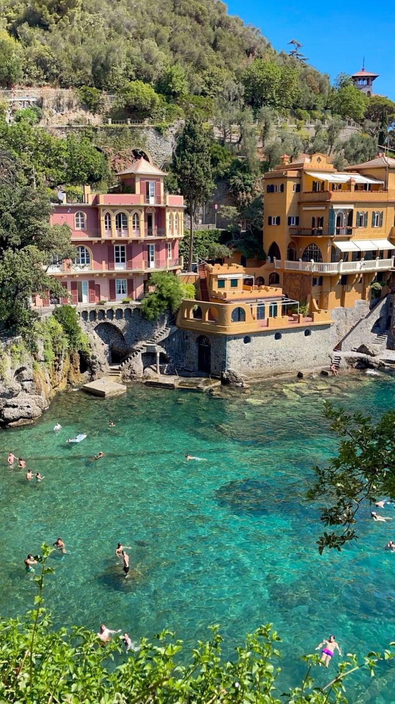
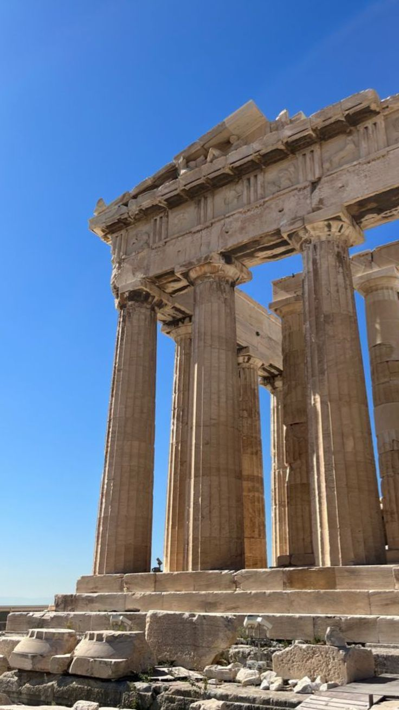
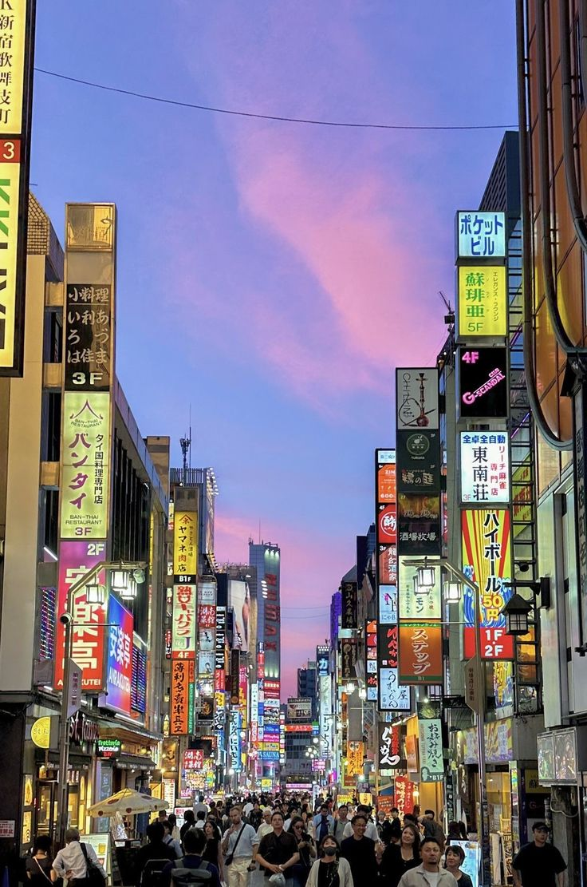

Meu nome é Gabrielle, tenho 24 anos e moro em Itumbiara, uma cidade charmosa no interior de Goiás. Crescer cercada pela natureza influenciou um dos meus principais hobbies. Viajar e realizar trilhas em ambientes naturais, como cachoeiras, praias e montanhas, tornou-se uma das minhas atividades favoritas, assim como o ecoturismo em geral.
A prática de esportes também me acompanha desde a infância. Comecei pela dança, passei pelo vôlei, experimentei o ciclismo e, atualmente, me encontro na musculação. Além de cuidar da saúde física, acredito que o exercício contribui significativamente para o bem-estar emocional.
Com a correria e o estresse do dia a dia, aprendi a valorizar os momentos de tranquilidade. Gosto de aproveitar meu tempo livre assistindo a filmes e saboreando pipoca. Tenho preferência por animações, dramas e produções coreanas.
Serra da Canastra - Minas Gerais
Depois de algumas aventuras nacionais, agora é a vez dos detinos internacionais
| Itália |  |
|---|---|
| Grécia |  |
| Japão |  |